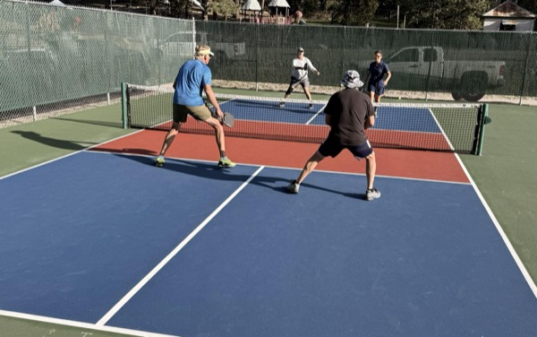
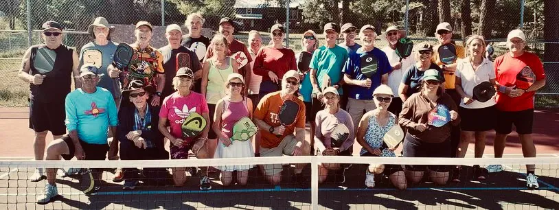
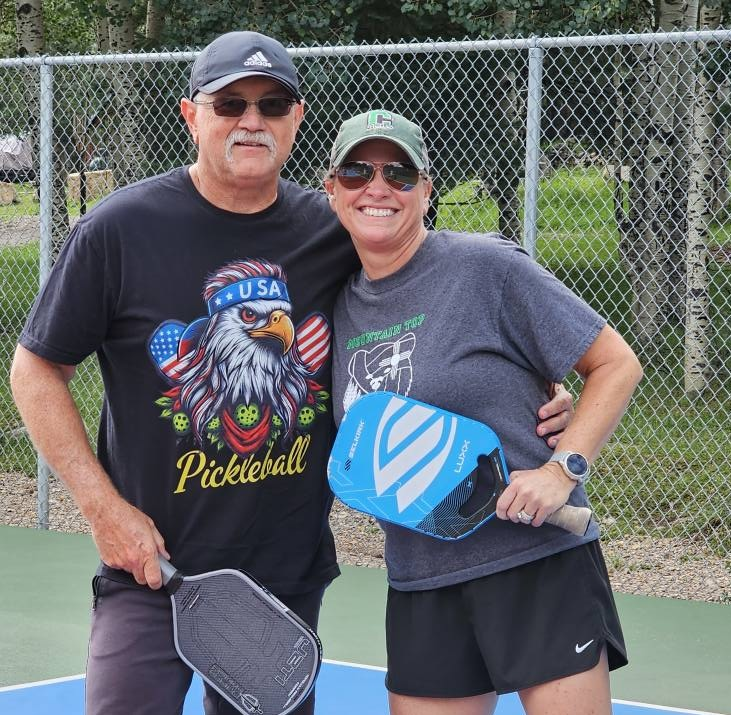
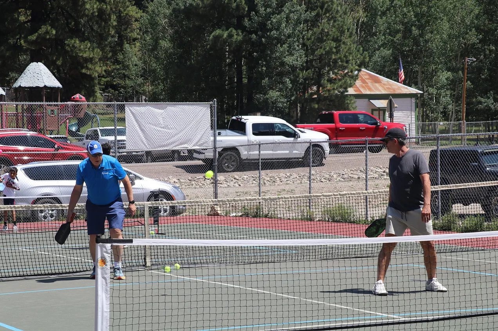
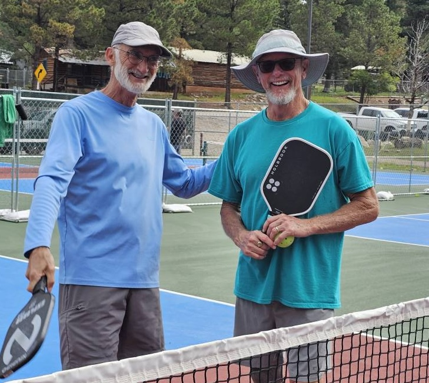

A Real Pickleball Town
Cloudcroft is a real pickleball town, not just a place with a painted court or two. Zenith Park has six outdoor public courts with permanent lines, free play with no reservations needed, and an active local club that welcomes visitors.
Pickleball fits Cloudcroft unusually well. The summer weather is cooler than the valley below, the town draws repeat visitors with flexible schedules, and the courts are right in the center of town. You can play for an hour or two and still have a full Cloudcroft day — grab lunch on Burro Avenue, hike Osha Trail, or play a round of disc golf at the same park.
The Pickleball Addicts of Cloudcroft (PAC) run organized drop-in play on Tuesday, Thursday, and Saturday mornings at 8:00 AM. Visitors are welcome. Bring your paddle, introduce yourself, and you’ll get picked up for a game.
2nd Annual Pickleball in the Clouds
A two-day doubles tournament in Cloudcroft — June 6 and June 7, 2026.

What it is
June 6 & June 7, 2026 · Cloudcroft, NM
The second annual Pickleball in the Clouds tournament returns to Cloudcroft for two days of competitive doubles play. Brackets cover Men’s, Women’s, and Mixed Doubles at Intermediate and Advanced skill levels.
How to register
- Visit pickleballden.com.
- Search for “Cloudcroft.”
- Select “2nd Annual Pickleball in the Clouds” and complete registration.
“Pack your game. Breathe the air. See you in the clouds!”
Venue, entry fees, and the schedule of play are posted on the registration site — check PickleballDen.com for the latest details.
Pickleball at 8,676 Feet







Cool Summer Play
While Alamogordo and Las Cruces and El Paso hit triple digits, Cloudcroft stays 20–30°F cooler. Morning play at the courts is comfortable all summer long.
Visitors Welcome
The PAC runs drop-in play three mornings a week. Show up with a paddle and you’ll get matched into a game. The group is social and welcoming to all levels.
More at Zenith Park
After your game, Zenith Park also has the Byron Ligon 9-hole disc golf course, a pavilion, and green space. Burro Avenue restaurants are a short walk away.
Visit the Courts
Everything you need to know before you play.
Location
Zenith Park, Cloudcroft, NM 88317. In town, easy to find. Parking at the park.
Hours & Schedule
Courts open dawn to dusk, year-round (weather permitting). PAC drop-in play: Tuesday, Thursday, Saturday at 8:00 AM. Check their Facebook group for schedule changes.
Contact
575-682-2411 (Village of Cloudcroft)
pickleballaddictsofcloudcroft.com
Good to Know
Bring your own paddle and balls — no on-site rental. Courts are outdoor with no shade. Afternoon wind and summer thunderstorms (June–August) can end a session. Morning play is best. Altitude: 8,676 ft — hydrate and pace yourself. Use sun protection.
Grab Your Paddle
Six free courts, mountain air, and a welcoming local club. Pickleball at 8,676 feet is one of the best easy wins in Cloudcroft.